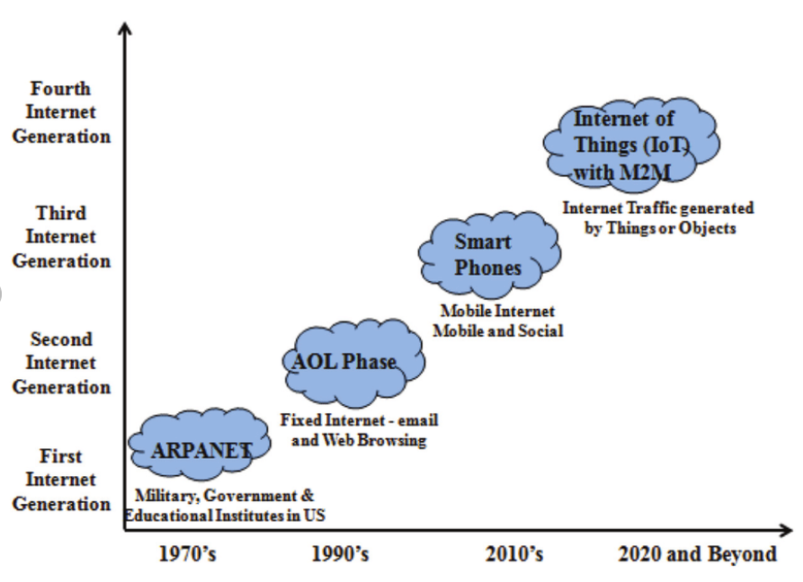

The Internet, itself a significant component of the IoT, started out as part of DARPA (Defense Advanced Research Projects Agency) in 1962, and evolved into ARPANET in 1969. In the 1980s, commercial service providers began supporting public use of ARPANET, allowing it to evolve into our modern Internet. Global Positioning Satellites (GPS) became a reality in early 1993, with the Department of Defense providing a stable, highly functional system of 24 satellites. This was quickly followed by privately owned, commercial satellites being placed in orbit. Satellites and landlines provide basic communications for much of the IoT.
When thinking of the IoT, consider the idea, “any device capable, can be interconnected with other devices.” The IoT is ripe for new and creative ideas to add to the tasks already in use. Imagine an alarm waking you at 6 AM in the morning, and then simultaneously signaling your coffee maker to turn on and start brewing coffee. Imagine your printer knowing when you are running low on paper, and automatically ordering more. Imagine the watch on your wrist telling you “where” you have been the most productive, while at work. The IoT can be used to organize such things as transportation networks. “Smart cities” can use it to reduce waste and maximize the efficient use of energy.
In truth, the IoT provides a nearly endless supply of opportunities to interconnect our devices and equipment. In terms of creativity, this field is wide open, with an infinite number of ways to “interconnect the devices.” It can be an exciting time for innovative individuals, in part, because we don’t fully understand the impact of these interconnections. The IoT offers both opportunities and potential security problems. At present, the Internet of Things is best viewed with an open mind, for purposes of creativity, and a defensive posture for purposes of privacy and security.